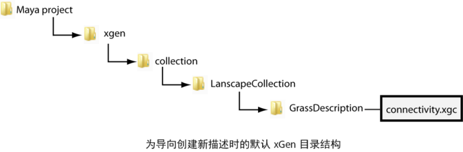

首次创建新描述时，Maya 将在设定的 Maya 项目目录中创建一个 xgen 文件夹。默认情况下，XGen 相关的所有文件（包括用于属性贴图、可修饰样条线、区域贴图和遮罩的描述 XDSC 文件、点 XUV 文件以及 Ptex 文件）都存储在项目的 xgen 文件夹的子文件夹中。
${DESC} 变量指当前描述的主数据路径。默认情况下，此数据路径设定为包含描述的集合的 xgen 文件夹。当预览或渲染描述时，XGen 将使用此数据路径访问所有文件和贴图。
重要： 在 XGen 文件路径中使用正斜杠 (/)。XGen 中不支持反斜杠 (\)。
例如，在设置了 Maya 项目，并创建以下内容之后：
- 名为 GrassDescription 的描述以及名为 LandscapeCollection 的集合。
- 在名为 landScapeplane 的多边形网格上。
- 使用导向放置基本体。
Maya 将为 XGen 生成以下默认数据结构。

有关 Ptex 和点贴图位置的信息，请参见贴图文件位置。
用户、局部和全局文件位置
您可以为文件资源库、表达式库和归档文件指定用户、局部和全局位置。使用以下环境变量指定这些位置：
- 用户：${HOME}/xgen
- 局部：${XGEN_ROOT}
- 全局：${XGEN_LOCATION}
请参见指定用户、本地和全局文件储存库的位置。
XGen 文件类型
- 集合 (.xgen)
- 集合 (XGEN) 文件存储所有关联描述的相关信息，其中可以包含 XGen 修改器、面片绑定和导向属性。创建描述或集合时会创建这些文件。请参见 XGen 集合。
- 描述 (.xdsc)
- 描述 XDSC 文件存储单个 XGen 描述的相关信息，包括基本体属性值、预览和渲染设置。导出描述时会创建这些文件。请参见 XGen 描述和保存和加载 XGen 文件。
- 增量 (.xgd)
- 存储对描述集合所做的更改的信息。使用此文件对描述进行编辑，同时保留其原始状态。请参见将修饰编辑保存到增量文件。
- 修改器 (.xgfx)
- 这些文件包含 XGen 修改器实例的属性值。使用此文件可在同一描述或在其他描述中传递或重用修改器。修改器文件仅包含有关该修改器属性的信息。它们不会保存修改器用作参考的信息。例如，“成束”(Clumping)修改器的点和贴图不会保存在修改器文件中。您必须复制此信息。
请参见 XGen 修修改器和使用 Python 命令导出和导入 XGen 文件。
- 归档 (.xarc)
- 与归档的几何体关联的引用文件，包括纹理、Alembic 和渲染代理文件。请参见自定义归档基本体。
- Ptex (.ptex)
- Ptex 文件用于区域贴图和遮罩。在 Maya 中使用绘制工具创建 Ptex 文件或使用在 Autodesk Mudbox 2012（或更高版本）中创建的 Ptex 文件。可修饰样条线属性也保存为 Ptex 文件。请参见 Ptex 贴图文件位置。
- XPD 缓存 (.XPD)
- 包含逐面片的描述中各个基本体的几何体、位置和属性值的相关信息。请参见修饰烘焙修改器和输出设置。
- 点 (.xuv)
-
以点的形式保存生成的基本体位置。请参见使用点贴图和“生成贴图”(Generate Maps)窗口。
- 粒子数据库（.pda、.pdb）
- 以粒子的形式保存生成的基本体。请参见“输出设置”(Output Settings)和粒子。
- 导向连接性 (.xgc)
- 存储 XGen 如何将导向插值到网格曲面的相关信息。请参见插值。